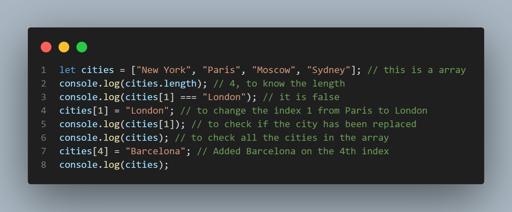
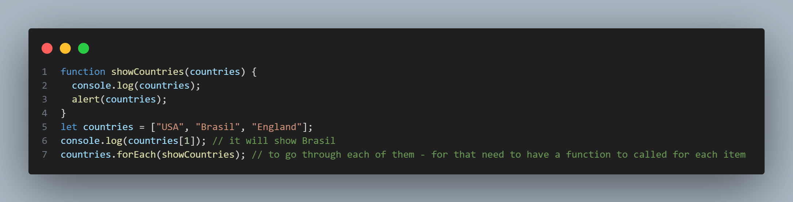

Allow us to create a collection of data
Array is like a table, The Array object, as with arrays in other programming languages, enables storing a collection of multiple items under a single variable name, and has members for performing common array operations.
example of Array with 4 items => let cities = ["New York", "Paris", "Moscow", "Sydney"];
If I want to access New York, I have to type => cities [0] it is called index
To know the lenght of your array, you just need to use for example cities.length
Loops repeat an action some number of times. Loop through each item of the array, you run one by one
let countries = ["USA", "Brasil", "England"];
